O CAOS É INEVITÁVEL
"É possível enxergar o que só pode ser descrito como uma galáxia inteira se transfigurando simultaneamente. As estrelas, porém, não parecem distantes e estáticas: todas elas estão colidindo, se mesclando e se deformando, sem fim nem começo. O ambiente todo gira descontroladamente para direções opostas, em uma sequência de explosões de energia e chamas brilhantes fluindo para todas as direções. É um espetáculo de fogos de artifício de cores infinitas, ilógico e caótico, como supernovas implodindo em constante transformação."
Energia é a entidade do CAOS. Tudo que não pode ser controlado, ointangível, a anarquia. A mudança constante, o frio e o calor. Tudo que envolve o inesperado ea transformação agrada a entidade de Energia. A manifestação física do elemento de Energia é uma matéria paranormal plasmática em constante transformação, que não consegue ser compreendida completamente pelo cérebro humano, e por causa disso, aparenta ser visualmente translúcida graças ao conflito da própria mentetentando sobrepor à imagem pelo que logicamente deveria estar lá. Apesar de ser uma manifestação que não é nem líquida, nem gasosa e nem sólida, o plasma de Energiapode ser golpeado fisicamente.
A entidade de Energia, ao contrário das outras entidades, parece não seguir um padrão ou lógica específica. Seus objetivos parecem estar conectados apenas com o seu próprio entretenimento, a qualquer custo. Tentar compreender as motivações da entidade de Energia já foi a razão da insanidade de muitos ocultistas.
A RELÍQUIA DE ENERGIA
 Ver mais sobre a Reliquia...AFINIDADE COM ENERGIA
Possíveis consequências da afinidade com Energia: olhos multicoloridos, veias brilhando, tiques incontroláveis, tremedeira, hiperatividade, queimaduras, cabelo e pelos com cores vibrantes, partes do corpo mescladas a tecnologia ou metálicas, olhos brilhando no escuro, etc.
CRIATURAS
Criaturas de Energia são caóticas e imprevisíveis, sempre agindo de forma completamente irracional e aleatória, sem objetivo ou motivação aparente. Não é incomum uma criatura de Energia estar associada a uma forma imaterial, como um programa de computador ou uma onda sonora dentro de uma gravação ou até mesmo uma manifestação da pura falta de lógica.
Ver mais Criaturas...RITUAIS
Rituais e poderes de Energia costumam ter uma variação do resultado exorbitante, onde uma mesma manifestação é capaz de causar um efeito sutil ou extremo. As distorções da Realidade causadas pela Energia estão associadas à manipulação da probabilidades e transformação da matéria e forças naturais, como temperatura, vento, eletricidade, fogo e água.
Ver mais Rituais...A transformação da Energia supera os efeitos de distorção da Morte
A ENERGIA É O ELEMENTO OPRESSOR DA MORTE